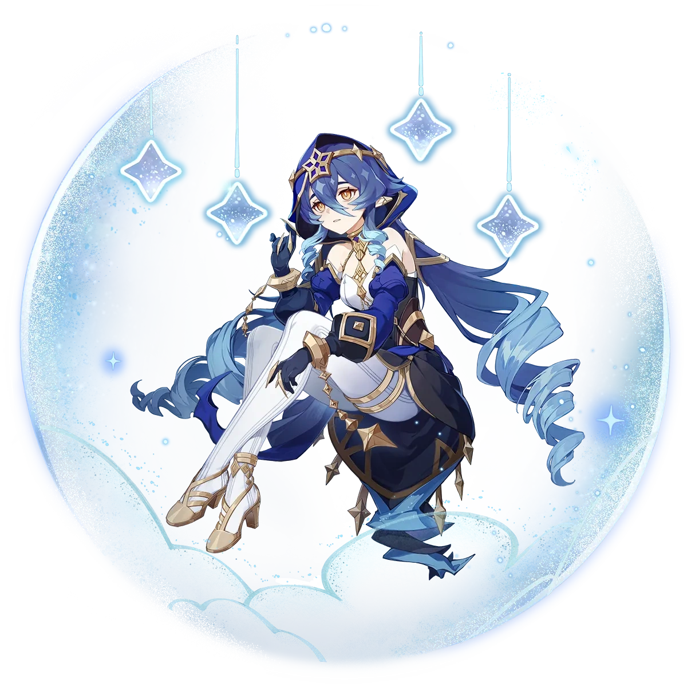
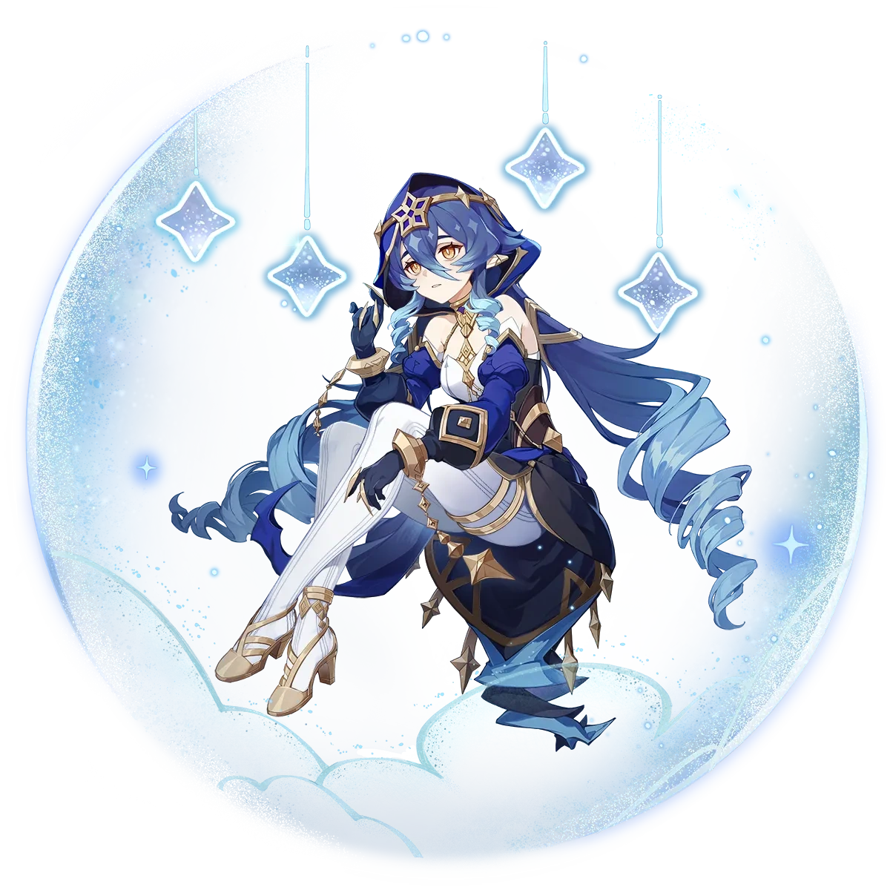
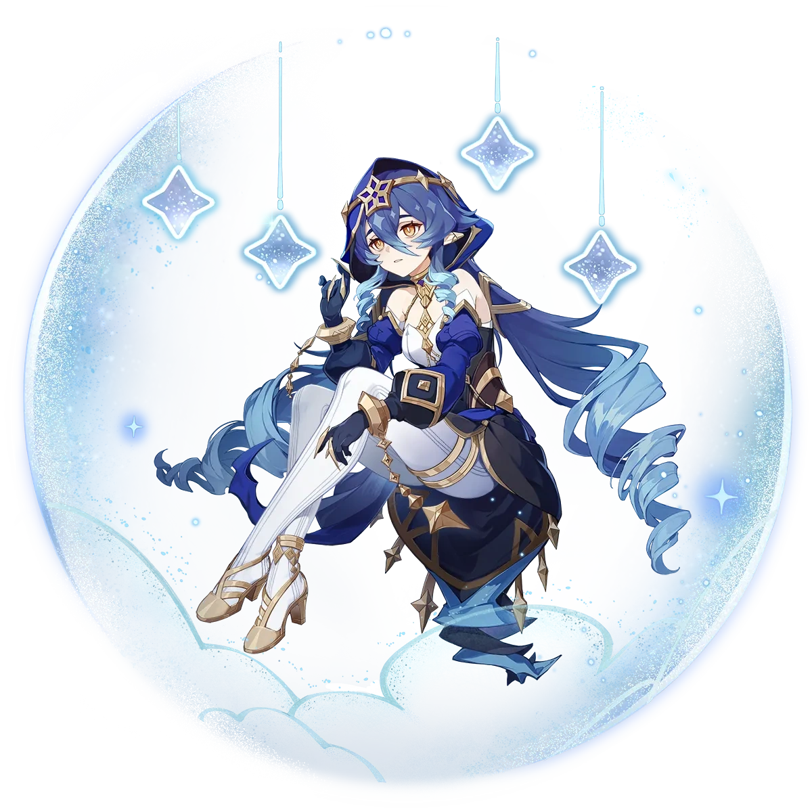

Cocogoat Cafe's Staffing
CEO, Owner, Manager: Ganyu

General Staff (Cooks and Servers) Ayaka, Nilou, Noelle, Layla, Yoimiya


 


Social Media/Website Manager: [redacted] [no image provided]
Our CEO, Ganyu, felt like taking a break from secretary work. She decided to start a pop-up cafe, garnering great domestic success in Liyue. Now, we've expanded our horizons, trying to reach every corner of Teyvat. We've hired more workers and started more branches. Come check our info down below to see your nearest branch. We're offering a wide range of dishes, with influences from every region of the world. Part of this comes from the wide cast of chefs we have, tirelessly cooking meals for our ever-expanding cafe empire. Check our staff (and hiring) below. Cocogoat Cafe, your cozy comfort zone!
Main Branch: Next to Wanmin Restaurant, Liyue Harbor Mondstadt Branch: Mondstadt City Inazuma Branch: Ritou Island Sumeru Branch: Port Ormos Future Branches: Fontaine, Natlan, and Snezhnaya
CEO, Owner, Manager: Ganyu
General Staff (Cooks and Servers) Ayaka, Nilou, Noelle, Layla, Yoimiya

Social Media/Website Manager: [redacted] [no image provided]
Resources Used: Logo created by Lucas Sacramento Header wallpaper from Genshin Impact All other images from Genshin Impact Wiki Video from Genshin Impact on YouTube